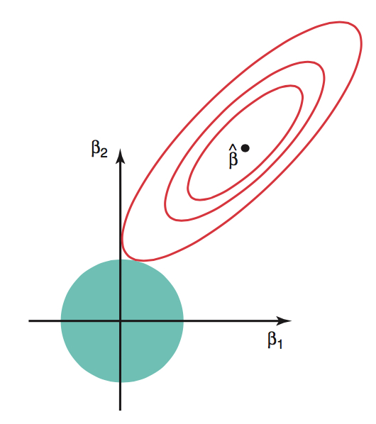
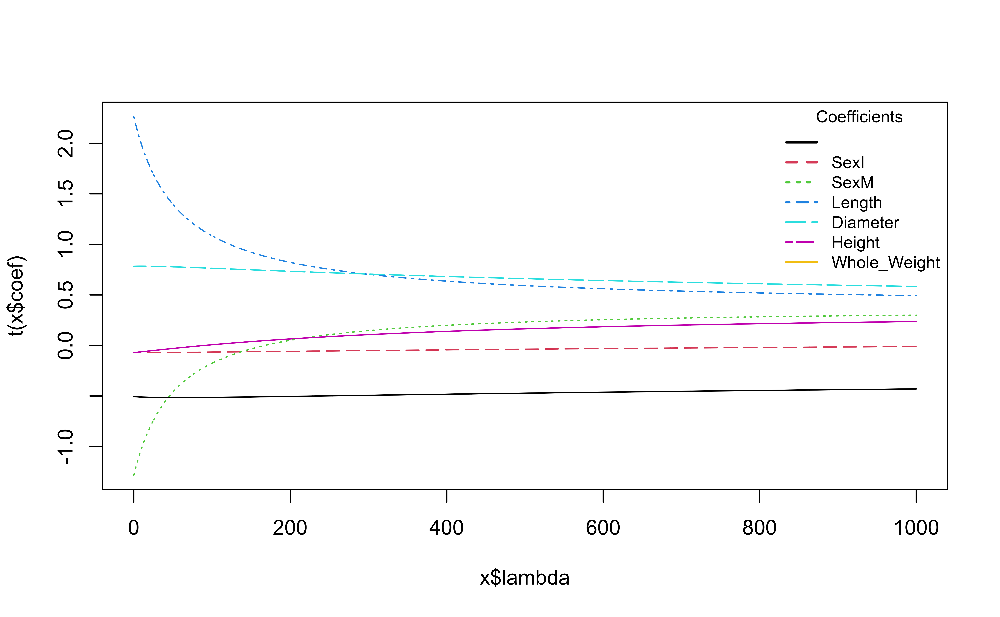

# load packages
library(tidyverse)
library(tidymodels)
library(knitr)
library(patchwork)
library(rms)
# set default theme in ggplot2
ggplot2::theme_set(ggplot2::theme_bw())Ridge regression
Announcements
HW 03 due TODAY at 11:59pm
Project exploratory data analysis due TODAY at 11:59pm (on GitHub)
Project presentations - in lab March 27
Statistics experience due April 2
Submit questions by 5pm today. Form at the end of today’s notes.
AE 05
Topics
- Ridge regression
Computing set up
Data: Age of abalones
The data for this analysis contains measurements for abalones, a type of marine snail. These measurements were collected and analyzed by researchers in Warwick et al. (1994). Click here for the publication.
The 4177 abalones in this study can be reasonably treated as a random sample.
The goal of this analysis is to use characteristics of the abalones to predict their age.
Variables
Sex: Male (M), Female (F), Infant (I)Length: Longest shell measurement (in millimeters)Diameter: Measured perpendicular to length (in millimeters)Height: Measured with meat in shell (in millimeters)Whole_Weight: Total weight of abalone (in grams)Age: Age (in years)
Fit a model
age_fit <- lm(Age ~ Sex + Length + Diameter + Height
+ Whole_Weight, data = abalones)
tidy(age_fit) |> kable(digits = 3)| term | estimate | std.error | statistic | p.value |
|---|---|---|---|---|
| (Intercept) | 5.643 | 0.336 | 16.795 | 0.000 |
| SexI | -1.084 | 0.119 | -9.151 | 0.000 |
| SexM | -0.145 | 0.097 | -1.492 | 0.136 |
| Length | -0.054 | 0.010 | -5.136 | 0.000 |
| Diameter | 0.114 | 0.013 | 8.903 | 0.000 |
| Height | 0.094 | 0.009 | 10.590 | 0.000 |
| Whole_Weight | -0.001 | 0.001 | -0.642 | 0.521 |
Potential issue
vif(age_fit) SexI SexM Length Diameter Height Whole_Weight
1.950083 1.386901 39.867076 41.170644 3.487132 7.709595 What is the potential issue with this model?
How does this impact the model results?
Limitations of the least-squares estimator
When \((\mathbf{X}^\mathsf{T}\mathbf{X})\) is nearly singular, \(Var(\hat{\boldsymbol{\beta}})\) gets large, and thus we have unstable coefficient estimates . This occurs when
- There are collinear predictors
- \(p\) is large relative to \(n\)
Additionally, if \(p > n\) , then we cannot find \(\hat{\boldsymbol{\beta}}\)
We can use a different estimator that addresses these limitations
Finding the ridge estimator
We find the ridge estimator, \(\hat{\boldsymbol{\beta}}_{ridge}\) by minimizing
\[ \underbrace{(\mathbf{y} - \mathbf{X}\boldsymbol{\beta})^\mathsf{T}(\mathbf{y} - \mathbf{X}\boldsymbol{\beta})}_{\text{SSR}} + \underbrace{\lambda \boldsymbol{\beta}^\mathsf{T}\boldsymbol{\beta}}_{\text{penalty}} \]
where \(\lambda \geq 0\) is the tuning parameter determined by the statistician (more on this later)
. . .
Like least-squares, ridge regression seeks to minimize the sum of squares
The penalty, \(\lambda\boldsymbol{\beta}^\mathsf{T}\boldsymbol{\beta} = \lambda\sum_{j = 1}^p\beta^2_j\) preferences smaller values of \(\beta_j\), so ridge will shrink the coefficients to 0 (this does not apply to the intercept)
Finding the ridge estimator
We find the ridge estimator, \(\hat{\boldsymbol{\beta}}_{ridge}\) by minimizing
\[ \underbrace{(\mathbf{y} - \mathbf{X}\boldsymbol{\beta})^\mathsf{T}(\mathbf{y} - \mathbf{X}\boldsymbol{\beta})}_{\text{SSR}} + \underbrace{\lambda \boldsymbol{\beta}^\mathsf{T}\boldsymbol{\beta}}_{\text{penalty}} \]
What will happen to \(\hat{\boldsymbol{\beta}}_{ridge}\) as \(\lambda \rightarrow 0\)? What will happen as\(\lambda \rightarrow \infty\) ?
Finding the ridge estimator
The ridge optimization problem can also be written
\[\text{minimize }(\mathbf{y} - \mathbf{X}\boldsymbol{\beta})^\mathsf{T}(\mathbf{y} - \mathbf{X}\boldsymbol{\beta}) \hspace{2mm} \text{subject to} \hspace{2mm} ||\boldsymbol{\beta}||^2_2 \leq c^2\] for some constant \(c\) . Note: \(||\boldsymbol{\beta}||_2 = \sqrt{\sum_{j=1}^p\beta_j^2}\)
. . .

Red contours are combinations of \(\beta_1\) and \(\beta_2\) that result in same SSR
Blue circle is set of possible values of \(\beta_1\) and \(\beta_2\) given the constraint
Ridge solution at tangent
See Section 1.5 of Lecture notes on ridge regression for details.
Ridge estimator \(\hat{\boldsymbol{\beta}}_{ridge}\)
The ridge estimator is
\[ \hat{\boldsymbol{\beta}}_{ridge} = (\mathbf{X}^\mathsf{T}\mathbf{X} + \lambda\mathbf{I})^{-1}\mathbf{X}^\mathsf{T}\mathbf{y} \]
(see Exam 01 for derivation)
- We have addressed the singularity of \((\mathbf{X}^\mathsf{T}\mathbf{X})\) by adding the positive constant to the diagonal
What is \(E(\hat{\boldsymbol{\beta}}_{ridge})\)?
Is \(\hat{\boldsymbol{\beta}}_{ridge}\) unbiased?
Bias-variance trade-off
The penalty \(\lambda\boldsymbol{\beta}^\mathsf{T}\boldsymbol{\beta}\) makes the estimated coefficients in ridge regression less variable than least-squares
Therefore, by adding some bias, we are able to reduce variance. This is called the bias-variance trade-off
Reducing the variance in coefficients is particularly important when we wish to use a model for prediction on new data
See Section 1.4.2 of Lecture notes on ridge regression for details.
Fitting the model
We use standardized values of the predictors when fitting the ridge regression model
Why do we use standardized values? Let’s consider
Length(in millimeters) in theabalonedataLet \(\beta_j\) be the coefficient of
Length. When finding the ridge estimates, the penalty for the coefficient ofLengthis \(\lambda \beta_j^2\) .Suppose instead of
Lengthin millimeters, we useLengthin meters. Then the new coefficient is \(1000\beta_j\). Thus, the penalty on the term would be \(\lambda 1000^2\beta_j^2\)
Standardizing the quantitative predictors ensures the penalty is fairly applied across all predictors (and not dependent on units)
Thus, shrinkage in the \(\beta_j\) reflects the predictor’s importance on the response
Ridge regression in R
Fit ridge regression models using lm.ridge() in the MASS package.
lambda <- 5
ridge_fit <- MASS::lm.ridge(Age ~ Sex + Length + Diameter +
Height + Whole_Weight,
data = abalones,
lambda = lambda)
Tip
MASS a select() function that will cause issues with select() in dplyr. Therefore, use the package::function() syntax instead of loading MASS.
Ridge regression in R
Code
tidy(ridge_fit) |> kable(digits = 3)| lambda | GCV | term | estimate | scale |
|---|---|---|---|---|
| 5 | 0.002 | SexI | -0.509 | 0.467 |
| 5 | 0.002 | SexM | -0.070 | 0.482 |
| 5 | 0.002 | Length | -1.139 | 24.016 |
| 5 | 0.002 | Diameter | 2.112 | 19.846 |
| 5 | 0.002 | Height | 0.784 | 8.364 |
| 5 | 0.002 | Whole_Weight | -0.067 | 98.066 |
. . .
- lambda: tuning parameter
- GCV: Generalized cross validation
- estimate: ridge coefficient given \(\lambda\)
- scale: standard deviation of \(x_j\) (used by R to compute standardized predictors)
Try different values of lambda
Code
lambdas <- seq(0, 1000, length = 5000)
ridge_fit <- MASS::lm.ridge(Age ~ Sex + Length + Diameter + Height + Whole_Weight,
data = abalones, lambda = lambdas)
# Plot ridge trace
plot(ridge_fit, main = "Ridge Trace Plot")
coef_names <- colnames(coef(ridge_fit))
coef_names <- coef_names[coef_names != "(Intercept)"]
n <- length(coef_names)
colors <- palette()[1:n]
legend(
x = "topright",
legend = coef_names,
col = colors,
lty = 1:n,
lwd = 2,
title = "Coefficients",
bty = "n",
cex = 0.8
)
What is happening to the coefficients as \(\lambda\) increases?
GCV to choose \(\lambda\)
We’ll choose \(\lambda\) by considering how well the model predicts on new data
Leave one out cross validation (LOOCV) is a method for evaluating model performance on new data, such that one observation is held out as the new data
Generalized cross validation (GCV) is a an approximation of LOOCV where we do not have to compute the model \(n\) times for each \(\lambda\)
We use the \(\lambda\) with the minimum value of GCV
GCV to choose \(\lambda\)
The fitted values from ridge regression can be written as
\[ \hat{\mathbf{y}} = \mathbf{H}_\lambda\mathbf{y} \]
where \(\mathbf{H}_\lambda\) is the hat matrix for a given value of \(\lambda\) .
- The average LOOCV for a given \(\lambda\) is
\[ CV(\lambda) = \frac{1}{n}\sum_{i=1}^{n}\Big(\frac{y_i - \hat{y}_i}{1 - h_{ii}}\Big)^2 \]
where \(h_{ii}\) is the \(i^{th}\) diagonal element of \(\mathbf{H}_\lambda\).
GCV to choose \(\lambda\)
GCV uses the \(\bar{h}_{ii} = tr(\mathbf{H}_\lambda)/n\) instead of the individual \(h_{ii}\)
\[ GCV (\lambda) = \frac{1}{n}\sum_{i=1}^{n}\frac{(y_i - \hat{y}_i)^2}{\big(1 - \frac{tr(\mathbf{H}_\lambda)}{n}\big)^2} \]
We use the
select()function in MASS to find \(\lambda\) that minimizes GCVMASS::select(ridge_fit)modified HKB estimator is 3.427088 modified L-W estimator is 6.826774 smallest value of GCV at 1.40028
Refit model with selected \(\lambda\)
lambda <- 1.40028
ridge_fit_2 <- MASS::lm.ridge(Age ~ Sex + Length + Diameter +
Height + Whole_Weight,
data = abalones,
lambda = lambda)| lambda | GCV | term | estimate | scale |
|---|---|---|---|---|
| 1.4 | 0.002 | SexI | -0.507 | 0.467 |
| 1.4 | 0.002 | SexM | -0.070 | 0.482 |
| 1.4 | 0.002 | Length | -1.242 | 24.016 |
| 1.4 | 0.002 | Diameter | 2.219 | 19.846 |
| 1.4 | 0.002 | Height | 0.784 | 8.364 |
| 1.4 | 0.002 | Whole_Weight | -0.070 | 98.066 |
Further reading
Ridge regression is a form of “penalized regression” and is often called “regularization” or a “shrinkage method”. Other such methods are LASSO and best subset selection.
One (potential) limitation of ridge regression is that it keeps all predictors in the models. Methods such as LASSO and best subset selection address this.
Resources for further reading:
Early ridge paper: Hoerl and Kennard 1970
Lecture notes on ridge regression by Wessel N. van Wieringen
Questions
Next class
Logistic regression
Complete Lecture 18 prepare